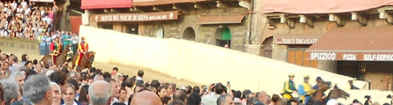

|
 
La contrada dell'Onda ha vinto il Palio di Siena del 2 luglio 2012 in onore della Madonna di Provenzano, conquistando il Drappellone realizzato dall'artista umbro Claudio Carli in ricordo dell’ottavo centenario della prima venuta di San Francesco a Siena (1212). Tre giri da vero Imperatore riportano il Palio in Malborghetto dopo 17 anni. Luigi Bruschelli detto Trecciolino e Ivanov dominano la carriera del 2 luglio conquistando il cencio dipinto dal maestro Claudio Carli. I cavalli escono dall'Entrone alle 19.28, con 2 minuti di anticipo rispetto all'orario previsto. La busta mette così in ordine le 8 contrade: Onda, Aquila, Giraffa, Selva, Drago, Leocorno, Nicchio e Bruco di rincorsa. Dopo pochi istanti il mossiere Natale Chiaudani manda tutti fuori per cercare di creare l'allineamento giusto. I cavalli rientrano tra i canapi, l'Aquila mostra i consueti problemi intravisti già nelle prove e si becca un richiamo dal mossiere. Piuttosto irrequieto anche il Nicchio, con Girolamo che forza la mossa e cade sul tufo fortunatamente senza conseguenze. Pochi minuti dopo la prima mossa falsa, il Bruco entra e l'Onda scatta subito in testa seguita da Aquila, Giraffa, Leocorno, Selva e Nicchio che dopo una partenza dalle retrovie cerca di prendere una traiettoria interna. Più staccate Drago e Bruco. Gigi Bruschelli gira in testa, la Giraffa va giù ma nella spianata riesce a superare l'Aquila. Si arriva al primo Casato con l'Onda che mantiene la testa, seguita dalla Giraffa e dal Nicchio che dall'interno sorpassa l'Aquila, mentre il Leocorno cade. Al secondo ingresso a San Martino l'Aquila, che all'altezza del verrocchino aveva nuovamente sorpassato il Nicchio, gira larga e permette a Nicchio e Drago di passare. Si arriva al secondo Casato con le posizioni invariate, nell'ordine Onda, Giraffa, Nicchio, Drago, Aquila e Selva. Ultimo San Martino con Trecciolino che rischia di cadere perchè Ivanov va giù, ma l'Imperatore rimane a cavallo e mantiene la prima posizione seguito dalla Giraffa e dal Nicchio che arriva fortissimo dalle retrovie. Si arriva infine all'ultimo Casato, l'Onda gira prima, Girolamo su Misteriosu sorpassa la Giraffa e tenta l'assalto finale, ma l'Onda ormai è imprendibile. Luigi Bruschelli detto Trecciolino conquista la sua tredicesima e riporta il Palio nell'Onda dopo 17 anni di astinenza.
A seguito, infatti, della richiesta, da parte della Contrada dell’attivazione dell’art. 50 del Regolamento del Palio, il Collegio veterinario composto dal veterinario comunale Col. Marco Reitano, dal Prof. Gaetano Mari, nominato dal Magistrato delle Contrade, e dal veterinario della Contrada interessata, Dr. Marco Astrologo "al fine di salvaguardare l’incolumità di Nestore De Aighenta e degli altri partecipanti alla Carriera, e di assicurare rapidi tempi di guarigione (3-5 mesi)" ha ritenuto, per l’accertamento di una infrazione di grado secondo alla terza falange dell’anteriore destro, inopportuna la partecipazione del cavallo al Palio. Si ricorda che un Palio corso con soltanto 8 contrade si ebbe il 16 agosto 1986. Anche in quell'occasione furono due rivali a non partecipare alla corsa: Valdimontone e Nicchio (cfr.) E' la terza volta, in questo Secolo, che la contrada non può prendere parte alla corsa per infortuni occorsi ai propri cavalli. 
Lamagno, il baio castrone di 8 anni andato in sorte al popolo di Castelvecchio, non correrà il Palio di Siena. La Contrada della Tartuca per la tutela del cavallo e della Festa senese dopo aver preso atto della situazione clinica del cavallo (era stato esentato ieri pomeriggio dalla Prova Generale), e dell’esame radiologico effettuato dalla Commissione veterinaria del Comune insieme al veterinario di Contrada, dove è stata accertata una infrazione di un processo retrossale della terza falange dell’anteriore sinistro, ha deciso di ritirare il cavallo dalla Carriera. Dalla diagnosi effettuata Lamagno risulta guaribile in circa tre mesi  CONTRADE CHE NON HANNO POTUTO PARTECIPARE AL PALIO
La diretta del Palio del 2 Luglio sarà effettuata in esclusiva per l’Italia da RAI Due con inizio alle ore 18,45 e fino alla conclusione della manifestazione. In caso di prolungamento oltre le 20,30 le immagini passeranno senza interruzione su altro canale RAI che sarà comunicato al momento. Telecronisti Susanna Petruni e Maurizio Bianchini. 


 


Si è svolta stamani, 2 c.m., alle ore 12 la conferenza stampa di presentazione della Carriera del commissario prefettizio Laudanna, che ha illustrato le linee direttive della sua esperienza paliesca. Ribadendo la sua curiosità rispetto al mondo contradaiolo Laudanna ha fatto un plauso al ricordo di San Francesco, che sottolinea il legame coi valori spirituali. Nel confermare il suo impegno, Laudanna si è scusato per qualche svarione organizzativo ed ha chiesto comprensione per chi come lui si avvicina al mondo del Palio con curiosità e dedizione. 
La Contrada del Bruco ha vinto la “Provaccia” del Palio di luglio,
che si è corsa questa mattina. Alla prova non ha partecipato la
Tartuca, che ha ritirato il cavallo per una infrazione di un processo
retrossale della terza falange dell’anteriore sinistro. Cambio di monta nella Chiocciola, con Amsicora che sostituisce Filuferro. Questi gli accoppiamenti e l’allineamento tra i canapi: LEOCORNO - MAGIC TIGLIO - Andrea Chessa detto Nappa II GIRAFFA - MOEDI - Andrea Mari detto Brio NICCHIO - MISTERIOSU - Alessio Migheli detto Girolamo DRAGO - LAMPANTE - Jonatan Bartoletti detto Scompiglio BRUCO - MISSISSIPPI - Giuseppe Zedde detto Gingillo CHIOCCIOLA - NESTORE DE AIGHENTA - Antonio Siri detto Amsicora AQUILA - MISSISIPPI - Giovanni Atzeni detto Tittia ONDA - IVANOV - Luigi Bruschelli detto Trecciolino SELVA - INDIANOS - Silvano Mulas detto Voglia
La Contrada del Bruco ha vinto la Prova Generale, preceduta dal drappello dei Carabinieri, a cavallo di 12 soggetti grigi. Esentato il cavallo della Tartuca, Lamagno, per una algia podale. Questi gli accoppiamenti e l’allineamento tra i canapi: SELVA - INDIANOS - Silvano Mulas detto Voglia ONDA - IVANOV - Luigi Bruschelli detto AQUILA - MISSISIPPI - Giovanni Atzeni detto Tittia CHIOCCIOLA - NESTORE DE AIGHENTA - Gianluca Mureddu detto Filuferro BRUCO - MISSISSIPPI - Giuseppe Zedde detto Gingillo DRAGO - LAMPANTE - Jonatan Bartoletti detto Scompiglio NICCHIO - MISTERIOSU - Alessio Migheli detto Girolamo GIRAFFA - MOEDI - Andrea Mari detto Brio LEOCORNO - MAGIC TIGLIO - Andrea Chessa detto Nappa II
La Contrada dell'Onda ha vinto la quarta prova del Palio di luglio.
Questi gli accoppiamenti e l’allineamento tra i canapi: GIRAFFA - MOEDI - Andrea Mari detto Brio DRAGO - LAMPANTE - Jonatan Bartoletti detto Scompiglio TARTUCA - LAMAGNO - Francesco Caria detto Tremendo AQUILA - MISSISIPPI - Giovanni Atzeni detto Tittia BRUCO - MISSISSIPPI - Giuseppe Zedde detto Gingillo SELVA - INDIANOS - Silvano Mulas detto Voglia NICCHIO - MISTERIOSU - Alessio Migheli detto Girolamo CHIOCCIOLA - NESTORE DE AIGHENTA - Gianluca Mureddu detto Filuferru LEOCORNO - MAGIC TIGLIO - Andrea Chessa detto Nappa II ONDA - IVANOV - Luigi Bruschelli detto Trecciolino
Nella giornata di sabato 30 giugno l'ex fantino plurivittorioso Massimino II al secolo Massimo Coghe, è rimasto coinvolto in un incidente stradale in moto, presso la Coroncina, sulla Cassia Sud in direzione della Val D'Arbia. Massimino ha riportato la frattura di entrambe le gambe. Non è in pericolo di vita, ma ne avrà per qualche mese, tra degenza e riabilitazione. Lo staff del nostro sito www.ilpalio.org fa i migliori auguri di pronta guarigione a Massimino. 
La Contrada del Drago ha vinto la terza prova del Palio di luglio.
Questi gli accoppiamenti e l’allineamento tra i canapi: ONDA - IVANOV - Luigi Bruschelli detto Trecciolino LEOCORNO - MAGIC TIGLIO - Andrea Chessa detto Nappa II CHIOCCIOLA - NESTORE DE AIGHENTA - Gianluca Mureddu detto Filuferro NICCHIO - MISTERIOSU - Alessio Migheli detto Girolamo SELVA - INDIANOS - Silvano Mulas detto Voglia BRUCO - MISSISSIPPI - Giuseppe Zedde detto Gingillo AQUILA - MISSISIPPI - Giovanni Atzeni detto Tittia TARTUCA - LAMAGNO - Francesco Caria detto Tremendo DRAGO - LAMPANTE - Jonatan Bartoletti detto Scompiglio GIRAFFA - MOEDI - Andrea Mari detto Brio
C' è un ordine tradizionale con cui le Contrade prendono posto tra i canapi
durante le prove e quest'ordine viene dettato dall'art.62 del Regolamento del Palio. Prima prova: Ordine nel quale le Contrade furono estratte a sorte per partecipare al Palio. Seconda prova: Ordine suddetto invertito. Terza prova: Ordine d'estrazione della Contrada per l'assegnazione dei cavalli. Quarta prova: Ordine suddetto invertito. Quinta prova: Ordine avuto dai cavalli per procedere alla loro assegnazione. Sesta prova: Ordine suddetto invertito.
La Contrada della Chiocciola ha vinto la seconda prova del Palio di luglio.
Due le nuove monte: Sebastiano Murtas nella Tartuca e Francesco Conti nella Selva.
Questi gli accoppiamenti e l’allineamento tra i canapi: BRUCO - MISSISSIPPI - Giuseppe Zedde detto Gingillo TARTUCA - LAMAGNO - Sebastiano Murtas DRAGO - LAMPANTE - Jonatan Bartoletti detto Scompiglio CHIOCCIOLA - NESTORE DE AIGHENTA - Gianluca Mureddu detto Filuferro NICCHIO - MISTERIOSU - Alessio Migheli detto Girolamo AQUILA - MISSISIPPI - Giovanni Atzeni detto Tittia SELVA - INDIANOS - Francesco Conti LEOCORNO - MAGIC TIGLIO - Andrea Chessa detto Nappa II GIRAFFA - MOEDI - Andrea Mari detto Brio ONDA - IVANOV - Luigi Bruschelli detto Trecciolino a partire dal 1888 
La Contrada della Giraffa ha vinto la prima prova del Palio di luglio.
Questi gli accoppiamenti e l’allineamento tra i canapi: ONDA - IVANOV - Luigi Bruschelli detto Trecciolino GIRAFFA - MOEDI - Andrea Mari detto Brio LEOCORNO - MAGIC TIGLIO - Andrea Chessa detto Nappa II SELVA - INDIANOS - Bastiano Sini AQUILA - MISSISIPPI - Giovanni Atzeni detto Tittia NICCHIO - MISTERIOSU - Alessio Migheli detto Girolamo CHIOCCIOLA - NESTORE DE AIGHENTA - Gianluca Mureddu detto Filuferro DRAGO - LAMPANTE - Jonatan Bartoletti detto Scompiglio TARTUCA - LAMAGNO - Francesco Caria detto Tremendo BRUCO - MISSISSIPPI - Giuseppe Zedde detto Gingillo
Due cavalli hanno il nome simile: Mississippi (quello che vinse lo scorso anno), e il debuttante Missisippi. TUTTI I CAVALLI DEL 2000 LE SCHEDE DI TUTTI I FANTINI
Dei 31 ammessi alla Tratta non si sono presentati Nerone Sauro e Freesby.
Nel corso della Terza batteria una brutta caduta per Silvano Mulas che è stato visitato per accertamenti medici da parte del personale. Nessun problema invece per Magic Tiglio.
Di seguito l’elenco dei 31 cavalli (con accanto il nome del proprietario) ammessi alla Tratta che si terrà
domani 29 giugno: 
La Carriera dedicata alla Madonna di Provenzano celebra la venuta a Siena
di S. Francesco d’Assisi  Claudio Carli LEGGI LA SUA BIOGRAFIA C’è la Madonna fatta perbenino, ma San Francesco dove s’è nascosto ? l’ho cercato per bene, diobonino, e un riesco a vedello in nessun posto ! Dato ch’era modesto, piccinino, forse sta dietro ‘l saio o un po’ discosto, ma il valore del cencio è il vaticino, che quel Carli profeta avea proposto: secondo te, chi l’avrebbe mai detto che il pittore ci aveva indovinato quando andò a presentare il su’ bozzetto ? Quel tonacone tutto rattoppato, co’ li stemmi di Siena nel prospetto, voleva di’ il Comune rottamato. 25 giugno 2012


Il Masgalano offerto dalle Società di Contrada è stato realizzato dagli studenti dell'istituto d'Arte
  
   
  
clicca qui per vedere chi correrà ad agosto
La foto venne scattata alla fine dell'anno scolastico 1964/65. Si trattava della IV sez.B della scuola Elementare G.Pascoli.
Nessuno si sarebbe mai aspettato che ben tre di quei bambini sarebbero diventati Capitani di Contrada.  Partendo da sinistra e dal basso verso l'alto: 1ª fila - 1° Paolo Pierini (già consultore del Priore dell'Istrice); 6° Maurizio Vanni (Capitano vittorioso della Giraffa) 2ª fila - 4° Orlando Papei (ideatore di questo sito); 7° Marco Mancianti (già Vicario del Drago) 3ª fila - 2° Marco Carletti (Presidente della Soc. Trieste); 3° Guido Burrini (Capitano della Lupa); 4° Mario Corbelli (Capitano del Nicchio) 4ª fila - Giuseppe Bonetto (già Barbaresco dell'Oca) La decisione dei capitani delle 17 Contrade di Siena è stata rapidissima: nessun dubbio sulla scelta del nome per sostituire Bartolo Ambrosione sul verrocchio. Si tratta di Natale Chiaudani, uno degli azzurri del salto ad ostacoli, nome di grande levatura nel mondo dell'ippica. La commissione composta da Mario Corbelli, Riccardo Coppini e Roberto Zalaffi ha spiegato che la scelta è caduta su Chiaudani per l'alto profilo e l'entusiasmo con cui si avvicinava al Palio di Siena, senza dimenticare la sua grande esperienza nel mondo dei cavalli. Tanti i successi in carriera, compresa la medaglia d'oro ai Giochi del mediterraneo nel 2005. E' il 43° Mossiere a partire dal 1894, anno in cui venne adottata l'attuale regola che prevede che la nomina del Mossiere venga suggerita dal Comune su segnalazione dei Capitani. PER SAPERNE DI PIU' 
La giunta comunale in data 30 maggio, ha nominato Natale Chiaudani come mossiere per il Palio del 2 luglio 2012 e deliberato i nomi dei Deputati della Festa; degli Ispettori della pista; dei Giudici della vincita e del Maestro di Campo. Massimo Lelli, della Nobile Contrada dell’Oca; Fabio Santini, della Contrada della Torre e Paolo Betti, della Contrada Priora della Civetta saranno i Deputati della Festa, mentre sono stati nominati Ispettori di pista Stefano Biagi; della Contrada Sovrana dell’Istrice; Luca Chiantini, della Contrada della Lupa e Claudio Pepi della Contrada di Valdimontone. I Giudici della vincita, invece, saranno Giovanni Valacchi, della Contrada della Pantera; Marcello Venturini, della Contrada della Torre e Mauro Civai della Contrada Sovrana dell’Istrice. Franco Sodi, invece, sarà il Maestro di Campo.  

|